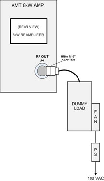

Illustration 6: Dummy Load Setup for MNS

Refer to 8kW 3.0T MNS Amplifier Calibration for instructions on connecting the RF Coupler with the correct Forward Power Sensor. The RF Coupler is needed in order to verify the RF power output before UPM calibration